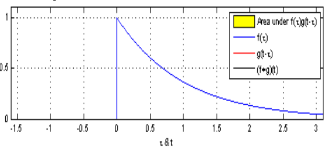
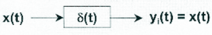
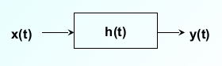

Sistemas Lineares e Invariantes no tempo - LTI#
Importância do estudo#
Muitos sistemas físicos são bem modelados com LTI.
Existe conjunto de ferramentas matemáticas para caracterizá-los:
1- Resposta ao impulso e a integral de convolução;
2- Equações diferenciais lineares com coeficientes constantes;
Revisões das propriedades de um sistema#
Sistema Linear e Invariante no tempo LTI:#
Para um sistema LTI são válidas as seguintes propriedades:#
Linearidade: é válido o princípio da superposição:
Invariância no tempo: Deslocamento na entrada \(\rightarrow\) deslocamento na saída:
Sistemas lineares e invariantes no tempo - LTI#
Definição#
Resposta ao impulso é o sinal de saída quando se aplica na entrada a função impulso unitário.
Denota-se essa resposta por h(t) ou h[n].
Sistemas LTI#
Quando o sistema é LTI a resposta h(t) ou h[n] caracteriza totalmente o sistema.
Pode-se determinar a resposta do sistema para qualquer entrada.
Convolução#
A integral de convolução - tempo contínuo:
Considerando:
\(h(t) = T\{\delta(t)\}\)
o sistema invariante no tempo, \(T\{\delta(t-\tau)\} = h(t-\tau)\)
Interpretação gráfica#
Convolução de duas exponenciais#

Exemplos de convolução#
Propriedades dos Sistemas LTI Contínuos#
Comutativa#
Associativa#
Distributiva#
Propriedades dos Sistemas LTI#
Inversibilidade#

Interpretação Gráfica da Integral de Convolução#
Representação através da resposta ao impulso: A integral de convolução#
Definição:
Resposta ao impulso de um sistema LTI é o sinal de saída quando aplica-se na entrada a função impulso unitário. Denota-se por h(t).
Representação de uma função através da função \delta(t):
Considere:
x(t) um sinal qualquer;
Uma aproximação em \(\widehat x\) degraus em que cada degrau possa ser representado pelo seguinte pulso:
Representação em degraus de x(t)#
Desde que \(\Delta\tau\delta_\Delta\) tenha aplitude 1 então x(t) pode ser aproximada por:
Integral de convolução#
Seja h(t) a resposta de um sistema LTI ao impulso unitário:
\(\delta(t) \stackrel{H[.]}{\rightarrow} h(t)\)
Suponha que seja aplicado no sistema um sinal x(t) em que:
x(t) seja uma aproximação em degraus (como anteriormente), assim, para um instante particular \(k\Delta\tau\) tem aplicado na entrada do sistema o seguinte pulso:
from IPython.display import YouTubeVideo
YouTubeVideo('acAw5WGtzuk', width=600, height=300)
Representação em degraus de x(t)#
Conforme \(\Delta\tau \rightarrow\) 0, a aproximação torna-se cada vez melhor.
No limite tem-se que:
No limite, note ainda que:
\(k\Delta\tau \rightarrow\) um valor qualquer \(\tau\);
\(\delta_\Delta \rightarrow\) \(\delta(t)\) função impulso unitário;
\(\Delta\tau \rightarrow d\tau\)
Portanto, a somatória torna-se uma integral do tipo:
\begin{equation} x(t) = \int_{-\infty}^{\infty}x(\tau)\delta(t-\tau)d\tau \end{equation}
\(x(t)\) pode ser representado por uma soma de impulsos deslocados
Integral de convolução#
Definindo:
\(\widehat h(t)\) como a resposta do LTI ao pulso \(\delta_\Delta(t)\), então a resposta do sistema ao pulso \(x(k\Delta\tau)\delta_\Delta(t-k\Delta\tau)\Delta\tau\) será:
isto é, a saída é a soma de todas as contribuições individuais de cada pulso deslocado.
Integral de convolução#
Novamente, conforme \(\Delta\tau \rightarrow 0\) a aproximação torna-se cada vez melhor.
e no limite tem-se que:
a equação acima é conhecida como integral de convolução ou integral de superposição.
corresponde à representação de um sistema LTI em termos de sua resposta ao impulso h(t).
ela é represemtada por: \(y(t) = x(t) * h(t)\)

Propriedades de Sistemas LTI#
Causalidade#
Um sistema é causal se a saída depende somente dos valores presentes ou passados da entrada.
A seguinte condição deve ser satisfeita: h(t) = 0, t<0.
Para a integral de convolução tem-se:
\(\Rightarrow\) sinais causais: \(h(t) = 0\), \(t<0\).#
Estabilidade#
Um sistema é estável se para toda entrada limitada a saída também é limitada. (BIBO)
Seja \(|x(t)|\leq M_x < \infty\):
Portanto, \(\int_{-\infty}^{\infty}|h(\tau)|d\tau < \infty\).
\(h(t)\) deve ser absolutamente somável
Resposta ao degrau unitário#
Informações sobre o comportamento do sistema para mudanças abruptas no sinal.
Está relacionada com a resposta ao impulso.
Seja: \(s(t) = h(t) * u(t)\) $\( s(t) = \int_{-\infty}^{\infty}h(\tau)u(t-\tau)d\tau = \int_{-\infty}^{t}h(\tau)u(t-\tau)d\tau + \int_{t^+}^{\infty}h(\tau)u(t-\tau)d\tau \)$
Sabendo que \(u(t-\tau) = 1\) para \(t \geq \tau\) e 0 c.c., então: \(s(t) = \int_{-\infty}^{t}h(\tau)d\tau \to h(t) = \frac{d}{dt}s(t)\)
Exemplo#
Encontre a resposta ao degrau unitário para um circuito RC tal que:
Medida da resposta ao impulso#
Excitação com onda quadrada#
Exemplo 1#
Respostas da onda quadrada#
Diferenciação da resposta da onda quadrada#
Exemplo 2#
Resposta da onda quadrada#
Resposta diferenciada#
Exemplo 3#
Algoritmo para determinação do amortecimento de materiais cerâmicos pela técnica das frequências naturais de vibração via excitação por impulso
Set-up experimental#
Resposta ao impulso#

Resposta ao impulso em salas#
Reverberação#
As intensidades dos ecos são sensiveis à geometria dos ambientes e ao materiais que o compõem.
A reverberação é um processo linear e invariante no tempo e, sendo assim, caracterizado pela resposta ao impulso.
Sistemas Discretos#
Convolução#
A soma de convolução - tempo discreto#
Sabendo que:
Tem-se
Comutativa#
Distributiva#
Sistemas em paralelo#
Sistemas equivalentes#
Caso paralelo: \(h_{eq} = h_1[n] + h_2[n\)
Caso série: \(h_{eq} = h_1[n]*h_2[n]\)
Estabilidade#
Sistemas LIT são estáveis se e somente se:
Justificativa:
Se \(x[n]\) é limitado (\(x[n] \leq B_x\)) então
Causalidade#
Sistemas LIT são causais se somente se \(h[n = 0\), \(n<0\).
Justificativa:
O primeiro somatório corresponde aos valores correntes e passados do sinal de entrada. Por outro lado, o segundo somatório envolve os sinais em tempos futuros. Para que a saída \(y(\mu_0\)) dependa apenas dos valores \(n \leq n_0\) a resposta impulsiva do sistema deverá ter \(h(n) = 0\), \(n < 0\).
import numpy as np
import matplotlib.pyplot as plt
f1 = lambda t: np.maximum(0, 1-abs(t))
f2 = lambda t: (t>0) * np.exp(-2*t)
O gráfico das duas funções
Fs = 50
T = 5
t = np.arange(-T, T, 1/Fs)
plt.plot(t, f1(t), label='$f_1(t)$')
plt.plot(t, f2(t), label='$f_2(t)$')
[<matplotlib.lines.Line2D at 0x7f6c5d1bee10>]
from IPython.core.display import HTML
import scipy.integrate
t0 = 1
flipped = lambda tau: f2(t0-tau)
product = lambda tau: f1(tau)*f2(t0-tau)
plt.figure(figsize=(8,3))
plt.plot(t, f1(t), label=r'$f_1(\tau)$')
plt.plot(t, flipped(t), label=r'$f_2(t_0-\tau)$')
plt.plot(t, product(t), label=r'$f_1(\tau)f_2(t_0-\tau)$')
display(HTML("Resultado da convolução: $f_1(t)*f_2(t)|_{t_0=%.0f} = %.2f$" % (t0, scipy.integrate.simps(product(t), t))))
Como vemos, a curva verde \(f_2(t_0−\tau)\) foi deslocada por \(t_0\)
para a direita e, em seguida, espelhado horizontalmente. O valor da integral de convolução corresponde à área sombreada em vermelho, que é o produto de ambas as curvas.
Podemos agora escrever uma pequena função que ilustra a integral de convolução para diferentes deslocamentos no tempo.
def showConvolution(f1, f2, t0):
convolution = np.zeros(len(t))
for n, t_ in enumerate(t):
prod = lambda tau: f1(tau) * f2(t_-tau)
convolution[n] = scipy.integrate.simps(prod(t), t)
f_shift = lambda t: f2(t0-t)
prod = lambda tau: f1(tau) * f2(t0-tau)
plt.subplot(211)
plt.plot(t, f1(t), label=r'$f_1(\tau)$')
plt.plot(t, f_shift(t), label=r'$f_2(t_0-\tau)$')
plt.plot(t, prod(t), 'r-', label=r'$f_1(\tau)f_2(t_0-\tau)$')
plt.subplot(212)
plt.plot(t, convolution, label='$(f_1*f_2)(t)$')
current_value = scipy.integrate.simps(prod(t), t)
plt.plot(t0, current_value, 'ro') # plot the point
showConvolution(f1, f2, t0)